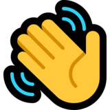

Hi 
My name is Hayden McKenzie
About Me
Name: Hayden McKenzie
Student ID: s3897476
Student Email: Here
Nationality:
Fun Facts:
I studied a year of Bachelor of Health Science/Bachelor of Applied Science(Chiropractic).
I also have a turtle, his name is Argon 🐢
Interest in IT?
My interest in technology has exponential grown over the last couple of years. The fascination for technology started in year 4 when I got my first laptop. The idea of turning any thought into a tangible program is one reason I wanted to do IT. My interest in programming started in year 12 however at that time, I wanted to become a chiropractor but after getting a job as a receptionist at a chiropractic clinic and seeing the effects of COVID was the main reason why I wanted to change courses.
The main reason why I decided to study at RMIT was because I was studying the Bachelor of Health Science/Bachelor of Applied Science (Chiropractic) before I switched over. Another reason is that RMIT is well know for their computer science and related fields.
Dream Job
This position focuses on how users use google chrome. It focuses on performance of chrome, communication with other servers, system design, networking, data storage, security, artificial intelligence, language processing, UI design and mobile development. This interests me because I want to be a full stack software engineer and the salary is very good.

Google is the third biggest technology company, they want the best of the best programmers to hire. Their preferred qualifications are master’s or PhD in Computer Science however, their minimum qualification are bachelor’s degree and experience with programming languages and data structures or algorithms.
Current Skills
My current skills are very limited to basic programming and website development in C++, C#, Java, PHP, JavaScipt - TypeScript, ReactJS and NodeJS. I have gotten a Junior Full Stack Software Engineer internship which focuses more on front-end development. I’m hoping that through the internship, I will improve my skills and to increase my arsenal of programming languages.
How Will You Get There?
There are two directions
Direction #1
One direction is that I complete an Information technology degree and if I have the opportunity, switch to either bachelor of computer science or software engineering.
Direction #2
The other direction is that my junior website developer internship turns into a full time full stack position which will improve my skills and ability in both front and back end development.
Both options lead to working at another company that is data centered. This will improve my data structuring which is a skill that makes you more employable at Google.
Hopefully with experience from those two jobs, I’ll be able to be hired at a popular technology company such as Oracle or Linkedin as a full stack software engineer. This is more of a resume buffer and give me the oppotunity to refine my overall programming abilities and give me a sense of what it is like to be apart of a big tech company.
After working with those three jobs, it will give me greater chance of getting employed at Google.
There are two directions
Direction #1
One direction is that I complete an Information technology degree and if I have the opportunity, switch to either bachelor of computer science or software engineering.
Direction #2
The other direction is that my junior website developer internship turns into a full time full stack position which will improve my skills and ability in both front and back end development.
Both options lead to working at another company that is data centered. This will improve my data structuring which is a skill that makes you more employable at Google.
Hopefully with experience from those two jobs, I’ll be able to be hired at a popular technology company such as Oracle or Linkedin as a full stack software engineer. This is more of a resume buffer and give me the oppotunity to refine my overall programming abilities and give me a sense of what it is like to be apart of a big tech company.
After working with those three jobs, it will give me greater chance of getting employed at Google.
These results don't mean a lot to me, they are just online websites that use a generalized answer. They won't influence my behavior in a team or forming a team.
My Project
The side bar will only cover 15% of the desktop application. The other 85% will be the main project managing and note taking interface.
There will be a home page where all the main pages will be located. Pages are folders where you keep all of your notes and deadlines separate from the rest of the notes. This means that you can have multiple pages what contain all different notes and deadlines without create a mess or mixing different notes, such as keeping an individual page for a morning routine and a to-do-list separate. The ability to separate the users notes creates a clean workspace.
These are showed as in a list formation and can be assigned a colour or an emoji for extra management. When clicked, it has the page title at the top and an area underneath to create all the notes. There will be an area to add properties that are featured on the page which can be navigated to easterly (such as a checkbox list that is hidden in a large file can be teleported to from the top of the document). Underneath that, there will be an area for adding notes that is similar to Microsoft Word or adding sticky notes. The reason why it would look similar to Word because nearly everyone that has had a computer has used Word which means that there is a solid foundation and understanding of how it will work. There would be features that are similar to Word such as changing the texts colour, changing font size, creating tables, adding pictures and the ability to export to different file types (such as word and pdf). Later, I want to add the feature that you would be able to create a link and be able to send it to other people.
Other features I want to add in the future are import features (from word, pdf, etc) and API features to allow for databases and wikis to be added. I also want to add the ability to monetize through adding an enterprise version. This can be added by limiting the free version and adding subscription services which the more the customer pays, the more they can access. These means that the target audience would busy individuals and companies would need to pay for the services who would need to share a lot of files and other documents.